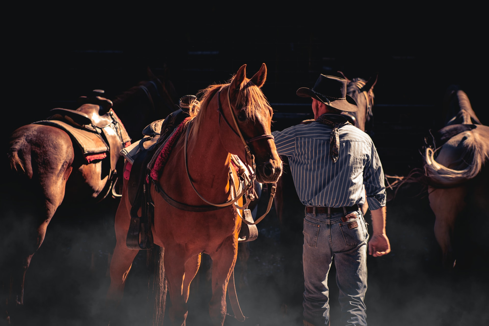

Related tours

TREKKING
Top 5 Treks
Looking for a trekking adventure you're not going to forget in a hurry? We've put together a list of 5 must-do trekking trails in Kyrgyzstan - enjoy!
Jun - Oct
230 $

HORSEBACK
Horseback Rides
Kyrgyzstan is definitely the dream destination for horseback riding lovers! Check out the best places to go riding around Song Kul lake and in the rest of Kyrgyz Tien Shan!
Jun - Sep
580 $